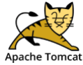
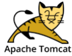
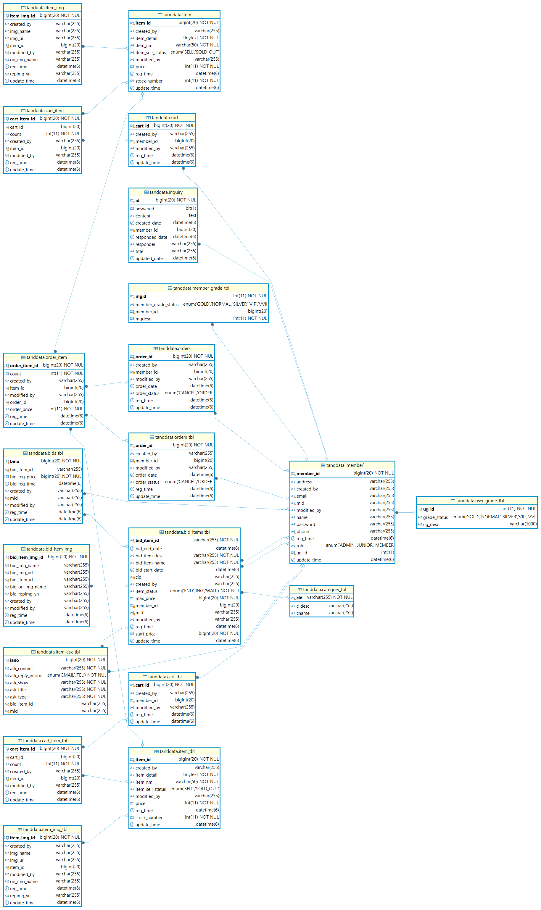

Mini Project03
프로젝트 기획서
×
| 구분 | Data |
|---|---|
| 프로젝트 참여자 | 김재혁(PM),배용우(PL), 장현주 |
| 프로젝트 목적 | 경매 쇼핑몰 프로젝트의 목적은 고객에게 다양한 상품을 경매 형태로 제공하여 합리적인 가격 형성을 촉진하고, 안전하고 투명한 거래 환경을 조성하며, 자신의 상품을 손쉽게 판매할 수 있는 플랫폼을 제공하여 경제적 기회를 창출하는 데 기여하는 것입니다. |
| 프로젝트 설명 | 홈페이지: 사용자 친화적인 인터페이스로 최신 경매 상품, 인기 상품, 추천 상품 등을 한눈에 볼 수 있도록 배치합니다. 시각적으로 매력적인 배너와 카테고리 링크를 통해 사용자가 원하는 상품을 쉽게 찾을 수 있게 합니다.
상품 리스트: 경매에 참여할 수 있는 다양한 상품들이 카테고리별로 정리되어 있습니다. 각 상품의 썸네일 이미지, 기본 정보, 시작 가격, 경매 종료 시간 등이 표시되어 사용자가 빠르게 관심 있는 상품을 확인할 수 있도록 합니다. 상품 상세 페이지: 선택한 상품의 상세 정보(사진, 설명, 판매자 정보, 경매 이력 등)를 제공합니다. 사용자 리뷰와 질문 섹션도 있어 다른 구매자와의 소통이 가능합니다. 경매 참여 기능: 사용자는 상품 상세 페이지에서 직접 입찰할 수 있는 버튼을 통해 손쉽게 경매에 참여할 수 있습니다. 현재 입찰 가격과 자신의 입찰 내역도 확인할 수 있습니다. 사용자 계정 관리: 사용자는 회원가입을 통해 개인 계정을 만들고, 경매 참여 내역, 찜 목록, 구매 기록 등을 관리할 수 있습니다. 사용자 프로필 페이지에서는 개인 정보 수정, 비밀번호 변경 등의 기능도 제공됩니다. 안전한 결제 시스템: 다양한 결제 옵션을 제공하여 사용자들이 안전하게 거래할 수 있도록 합니다. 결제 완료 후에는 자동으로 경매 참여자에게 알림이 전송됩니다. 고객 지원 및 FAQ: 자주 묻는 질문(FAQ)과 고객 지원 센터를 통해 사용자들이 쉽게 도움을 받을 수 있도록 합니다. 실시간 채팅 기능도 추가하여 즉각적인 지원이 가능하게 합니다. |
| 프로젝트 개발환경 | Front :
Back : 
DB & Server :  

Development Tools : 
Collaboration : 

Desing & Modeling Tools : Code Assistant : |
| 기능 담당 |
배용우 - DB설계, 경매 사이트, 마이페이지(구매내역, 경매내역), 찜기능
김재혁 - 회원 CRUD(소셜로그인), 마이페이지 장현주 - 디자인, 공지, 일반상품 |
개요 : Final 프로젝트는 다소 기한이 길어서 3명임에도 불구하고 원할하게 개발을 할수있었습니다.
이번에도 PL로써 프로젝트를 참여하였는데, 파이널 프로젝트고, 원하는 사이트 기능을 따져보니 생각보다 복잡하면서 db의 양도 확실히 더 많이 늘어났습니다.
먼저 일반적인 쇼핑몰을 구현 한 후, 거기에 맞춰서 경매 기능을 도입한 또 다른 사이트를 추가하였습니다. 보기에는 두 종류의 사이트를 운영한듯한 느낌을 줄 수 있었던것같습니다.

db분석 : 확실히 사진으로 보아도 미니 프로젝트보다 복잡해진것을 느껴질수 있었습니다.
먼저 제가 맡은 부분인 경매part관련된 테이블은 먼저 경매 상품 관련된 bid_item_tbl로 경매관련된 정보를 담는 테이블입니다.
거기에 맞춰서 유저들이 경매관련된 입찰을 하기 위해 bids_tbl를 설계하였습니다.
이 테이블은 입찰관련된 데이터를 담는 테이블로 입찰 내역을 누적시켜서 끝나는 시점에 가장 높은 금액을 선별하여 해당 user에게 email로 전송하였습니다.
또한 경매상품을 즉시 구매할수 있도록, order_item과 연결을 하였고, mini 02 프로젝트처럼 카테고리 동적으로 만들기 위해서 category_tbl을 구현하였습니다.
먼저 제가 맡은 부분인 경매part관련된 테이블은 먼저 경매 상품 관련된 bid_item_tbl로 경매관련된 정보를 담는 테이블입니다.
거기에 맞춰서 유저들이 경매관련된 입찰을 하기 위해 bids_tbl를 설계하였습니다.
이 테이블은 입찰관련된 데이터를 담는 테이블로 입찰 내역을 누적시켜서 끝나는 시점에 가장 높은 금액을 선별하여 해당 user에게 email로 전송하였습니다.
또한 경매상품을 즉시 구매할수 있도록, order_item과 연결을 하였고, mini 02 프로젝트처럼 카테고리 동적으로 만들기 위해서 category_tbl을 구현하였습니다.